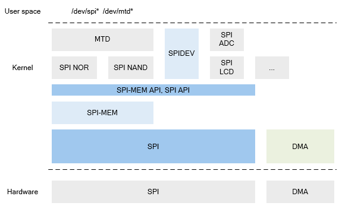

7.10.5. 设计说明¶
7.10.5.1. 源码说明¶
相关模块 |
源码路径 |
|---|---|
SPI subsystem |
source/linux-5.10/drivers/spi/ |
Driver |
source/linux-5.10/drivers/spi/ |
7.10.5.2. 模块架构¶

图 7.39 内核 SPI 框图¶
由于使用 SPI 的外设较多，内核中通过 SPI 子系统来支持各种 SPI 外设，整体架构如上图所示，包括：
Artinchip SPI 驱动
SPI Core
SPI-MEM
面向内核的 API
面向用户空间的接口（SPIDEV）
由于 SPI 传输需要使用 DMA，因此 DMA 子系统是一个相关模块。
7.10.5.3. 关键流程¶
7.10.5.3.1. 初始化¶
aic_spi_probe();
|-> irq = platform_get_irq(pdev, 0);
|-> ctlr = spi_alloc_master(&pdev->dev, sizeof(struct aic_spi));
|-> platform_set_drvdata(pdev, ctlr);
|-> aicspi->dma_rx = dma_request_slave_channel(aicspi->dev, "rx");
|-> aicspi->dma_tx = dma_request_slave_channel(aicspi->dev, "tx");
|-> request_irq(aicspi->irq, aic_spi_handle_irq, 0, aicspi->dev_name, aicspi);
|-> spi_register_controller(ctlr);
7.10.5.3.2. 中断流程¶
SPI 控制器驱动中的中断处理并不复杂，当中断发生时，首先在 irq handler 中读取相关状态寄存器， 然后判断如何处理：
static irqreturn_t aic_spi_handle_irq(int irq, void *dev_id)
{
...
spi_ctlr_pending_irq_clr(status, base_addr);
/* master mode, Transfer Complete Interrupt */
if (status & ISR_BIT_TC) {
...
spi_ctlr_irq_disable(ISR_BIT_TC | ISR_BIT_ERRS, base_addr);
spi_finalize_current_transfer(aicspi->ctlr); // 传输完成，通知调用者
...
return IRQ_HANDLED;
} else if (status & ISR_BIT_ERRS) {
...
spi_ctlr_irq_disable(ISR_BIT_TC | ISR_BIT_ERRS, base_addr);
spi_ctlr_soft_reset(base_addr); // 传输出错，reset 控制器
spi_finalize_current_transfer(aicspi->ctlr);
...
return IRQ_HANDLED;
}
...
return IRQ_NONE;
}
7.10.5.4. 数据结构¶
enum spi_mode_type {
SINGLE_HALF_DUPLEX_RX,
SINGLE_HALF_DUPLEX_TX,
SINGLE_FULL_DUPLEX_RX_TX,
DUAL_HALF_DUPLEX_RX,
DUAL_HALF_DUPLEX_TX,
QUAD_HALF_DUPLEX_RX,
QUAD_HALF_DUPLEX_TX,
MODE_TYPE_NULL,
};
设备数据结构。
struct aic_spi {
struct device *dev; // 设备指针
struct spi_controller *ctlr; // SPI CORE 的控制器指针
void __iomem *base_addr; // 映射后的 SPI 控制器地址
struct clk *mclk; // SPI 控制器的时钟
struct reset_control *rst; // SPI 控制器的复位
struct dma_chan *dma_rx; // SPI 控制器的接收 DMA Channel
struct dma_chan *dma_tx; // SPI 控制器的发送 DMA Channel
dma_addr_t dma_addr_rx; // SPI 控制器 RX FIFO 地址
dma_addr_t dma_addr_tx; // SPI 控制器 TX FIFO 地址
enum spi_mode_type mode_type;
unsigned int irq; // 中断号
char dev_name[48];
spinlock_t lock;
};
7.10.5.5. 接口设计¶
7.10.5.5.1. aic_spi_setup¶
函数原型 |
int aic_spi_setup(struct spi_device *spi) |
功能说明 |
SPI 设备的传输位宽、模式的检查和配置 |
参数定义 |
struct spi_device *spi
SPI 设备指针
|
返回值 |
0: 成功
其他: 失败
|
注意事项 |
7.10.5.5.2. aic_spi_set_cs¶
函数原型 |
void aic_spi_set_cs(struct spi_device *spi, bool cs_high) |
功能说明 |
设置 SPI 设备的片选信号 |
参数定义 |
struct spi_device *spi
SPI 设备指针
bool cs_high
是否选择该设备
|
返回值 |
无
|
注意事项 |
7.10.5.5.3. aic_spi_max_transfer_size¶
函数原型 |
size_t aic_spi_max_transfer_size(struct spi_device *spi) |
功能说明 |
SPI CORE 获取当前 SPI 控制器单次最大可传输的数据长度 |
参数定义 |
struct spi_device *spi
SPI 设备指针
|
返回值 |
单次可传输的数据长度
|
注意事项 |
7.10.5.5.4. aic_spi_transfer_one¶
函数原型 |
int aic_spi_transfer_one(struct spi_controller *ctlr,struct spi_device *spi, struct spi_transfer *t) |
功能说明 |
执行一次传输 |
参数定义 |
struct spi_controller *ctlr
SPI 控制器指针
struct spi_device *spi
SPI 设备指针
struct spi_transfer *t
单次 SPI 传输结构体指针
|
返回值 |
0: 成功
其他: 失败
|
注意事项 |